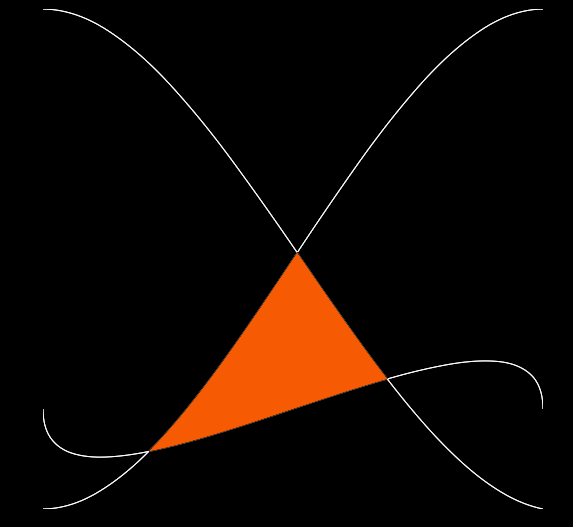
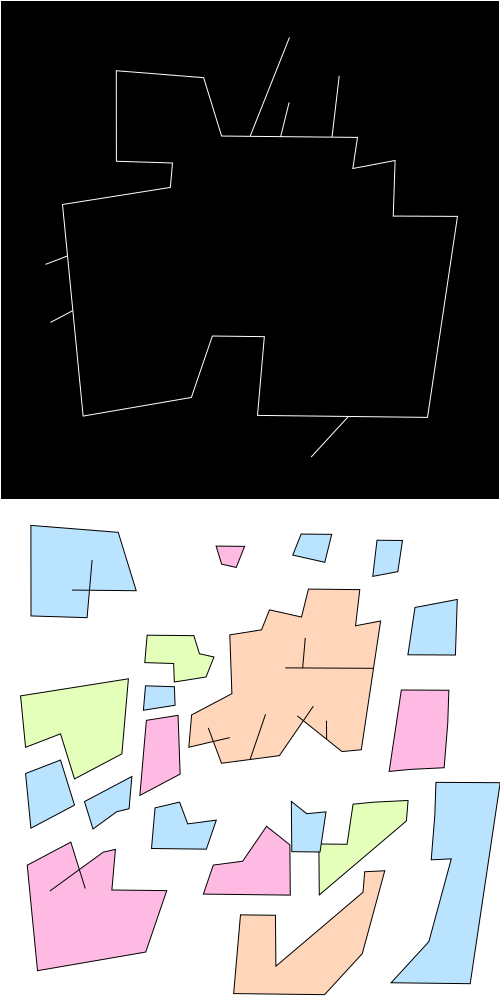

| Date | Tool Name | Description | Links |
|---|---|---|---|
| Jan.30.2017 | Eraser Tool |

To kick things off, here is an eraser tool that area erases planar graph elements. This tool was made as part of my ScribbleJS project and many of these future tools will be extensions of that project. |
ScribbleJS, Eraser Tool |
| Feb.06.2017 | Drawing Additional Lines |
I've implemented line linking within my Sim Urban Game. I will update this algorithm to a stand alone example when I have some time. |
Sim Urban Game |
| Feb.13.2017 | Coloring |
For this week, I explored graph colorings, where adjacent faces do not share colors. In other words, I implemented
computational color by numbers.

I wanted to achieve an effect like the page from this coloring book that I colored ffor 10 hours on a train to Pittsburgh. 
This is a coloring that I automatically generated this week. Please use the Demo When my naive greedy colorings produced bipartite coloring for the random scribbles, I was surprised. Evidently a single line going through space actually produces bipartite graphs in most situations. 
I tried coloring all of the faces black, and I found it interesting that various topology can easily be seen from this visual perspective. |
Online Demo Graph Coloring Wiki |
| Feb.20.2017 | Additive Line Drawing |
For this week, I made it so that users can draw lines with proper topological updates as desired. This took a while,
since there are a lot more moving parts than creating embeddings from scratch. There were a lot of new functions and edge cases that I hadn't thought much about before. I think that standard tools such as Inkscape would be improved if used this functionality.
 |
Demo! |
| Feb.27.2017 | Bezier Curves |
 This week I implemented functionalities related to Cubic curves. Users can now:
|
Demo! Code! Blog Post about cubic spline mathematics. Blog Post about cubic spline mathematics. De Casteljau's Algorithm Spline Conversions |
| Mar.6.2017 | Internal Continents |
This week, I worked on handling the drawing of internal continents and the embedding of internal complemented lines. Firstly, I fixed a bug in the eraser tool, where it is now rendering internal continents overtop of the faces that they are embedded on top of. I accomplished this by sorting all of the faces by area. A natural benefit is that complemented faces have negetive area, so they are last in the sorted order, which is great, because they are drawn as boundary line segments, without interiors, so they are highlighted as white over top of everything, but it they don't obscure any of the internal regions for the other faces. For comparison, this is an example of the previous erroneous behavior, where the internal face was occluded by a large enclosing face. |
Demo! |
| Mar.27.2017 | Holes |
This week, I've been continuing working on Hole rendering, embedding, and collision detection.
I've begun to integrate the canvas and SVG even-odd path rendering into the Scribble.JS representations. I've also implemented primitivve collision detection, where a geometry G intersects a shape S with a hole H if and only if G intersects S, but not H. To improve this, I should instead detect intersections when G intersects S and G is not contained within the interior of H. Another challenge is figuring out how treat the holes as native objects within the halfedgegraph. This will perhaps require me to start doing 2D Constructive Solid Geometry. |
Demo! |
| Apr.5.2017 | Vector Graphics Editor |
This week, I refactored and standardized my user input routines and implemented some rudimentary button systems. Users can now use multiple tools within the same demo and it will become more impressive as I continue to add more tools.
 The icing on the cake will be when I include the ability to export or import svg or Bryce-vg files. Wouldn't it be neat if I could show the class a media creation tool akin to the one's they've been using in their work? Since I've been monitoring my time more closely these days, I believe that this iteration took approximatly 11 hours of work from planning to execution to working through the small details with the editor (It is still not very stylish, but that wasn't my goal this week.) This week, I also put together the first draft of a style guide for this whole general endeavor. I'm going to bed around 3 am today on the morning of April 5th, since I was pretty excited about this project. I'll go back and hunt for some typos and bugs on some other day. |
Demo! |
| Apr.17.2017 | SVG File Saving |
This week, I added a button to the editor that allows users to save their work as a self contained svg file. Note: SVG stands for Scalable Vector Graphics.
After I was done editing the example image above, I clicked on the floppy disk looking, blue save button at the top left of the editor which downloaded the following svg file. You can download the following image if you want to see that it is a genuine svg image that is composed of face paths, rather than the original line paths. The greatest thing of all is that now you can create illustrations in the editor and instantly get an svg with individual paths for each face. I've made many illustrations in programs such as Inkscape before and it annoyed me that I had to manually trace all of the faces if I wanted to color them. Using Scribble.js, I can now just draw my line strokes and the face paths are automatically computed along the way.  Here are some next steps:
|
Demo! |
| Apr.29.17 | Self Intersecting Line Drawing |
This week, I tackled the self intersecting line problem. I had already solved the static case, but I've worked on integrating self-intersecting lines into the draing tool. A user can start out with a self-intersecting line. It will produce a segmented scribble with no trouble, but it is not yet robust many cases, such as when intersections are spaced close to each other. This issue of numerical stability and topological degeneracy will be addressed in the future by combining elements that are close to each other. A user can then draw another line on top of the drawing, again making use of a self_intersection. The Scribble is again segmented correctly. Here are some next steps:
|
Demo! SVG File Red Lines SVG File |
| May.1.17 | Drag Line Drawing Tool |
This week, I've implemented a draggable line drawing tool, where the users can create freeform paths in a less controlled manner than the click line drawing tool. Here are some thoughts:
|
Demo! |
| May.10.17 | PNG File Saving |
As of this week, users can save PNG files of their work with transparent backgrounds. Note: PNG stands for Portable Network Graphics and they may be used to store fixed resolution views of a scene, whereas SVG (Scalable Vector Graphics) files store the mathematical forms themselves, which may then be manipulated and modified in useful ways in vector graphics applications.
Here are some thoughts:
|
Demo! |
| May.15.17 | Vertex Movements (Coming along) |
Thoughts:
|
Demo! |
| Future | Future |
|
Demo! |
| Future | Symmetry | Improve user feedback in the editor. Handle tough numerically and geometrically degenerate situations. [DESCRIPTION] Ideas: Editing positions. Expanding network from previous nodes. Bezier curve input / output. Flows. User input. Areas. Smoothing. Symmetry. Randomized bouncing of a geometric form that results in a particular behavior. A study of popcorn probability. Beaches and Oceans. Fix up line segment intersection functions for intersection reporting and monolithic intersection routines. | [LINKS] |
| Future | Packing Graphs | Take a collection of drawings and pack them into a polgonal region of space without collision. | Blue Noise. |
| [Future] | Beam Tracer |

Compute the Geometric Filled Regions that coorespond to beams of light traveling through a scene. I will spend this week ironing out the last bugs. TODO: Consider moving hole representations as native properties of a Halfedge Graph. |
Online Demo! Git Repository |
| [Future] | [Spring Break] | ||
| [Future] | Offsets | [DESCRIPTION] | [LINKS] |
| [Future] | Flows and/or Smoothing | [DESCRIPTION] | [LINKS] |
| [Future] | Topological Constructions | Construction of graphs fitting various parameters, such as descriptions of set theoretic structure. | [LINKS] |
| [Future] | Demuth Styling (Or other texturing) | [DESCRIPTION] | [LINKS] |
| [Future] | Support Degenerate Geometries | I will try to make the algorithms more robust and will process perfectly overlapping collinear line segments and the like. | [LINKS] |
| [Future] | [TOOL NAME] | [DESCRIPTION] | [LINKS] |
| [Future] | [TOOL NAME] | [DESCRIPTION] | [LINKS] |
{kind=link}
{kind=link}
{kind=link}
{kind=link}
{kind=link}
{kind=link}
{kind=link}
{kind=link}
{kind=link}
{kind=link}
{kind=link}
{kind=link}
{kind=link}